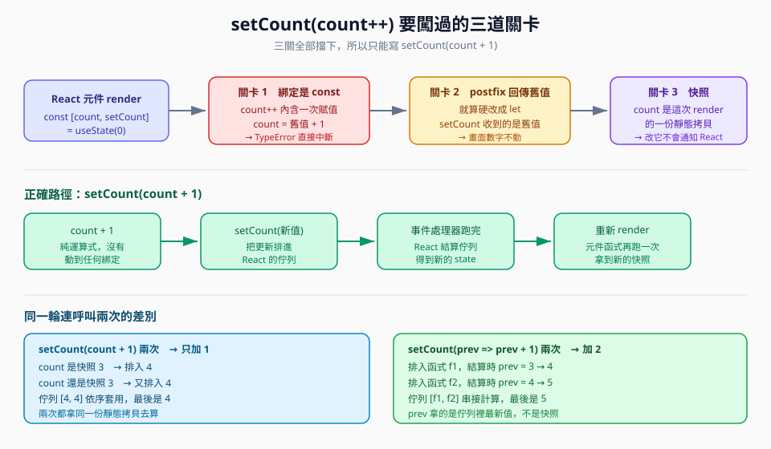
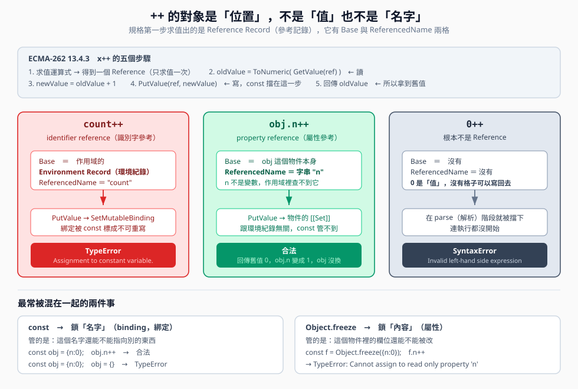

為何 setCount(count++) 無效而 setCount(count + 1) 可以
互動版筆記 建立日期 2026-09-07 主題：postfix increment、const 綁定、React render 快照

圖一 setCount(count++) 要闖的三道關卡，以及正確路徑
一、核心觀念速記
問題count++ 是不是就等於 count = count + 1 ？
- 相同的部分 count++ 一定包含一次賦值，也就是 count = 舊值 + 1。這個直覺是對的
- 多出來的部分 它同時是一個有回傳值的運算式，而且回傳的是舊值
- 不等價的部分 ++ 先做 ToNumeric，+ 遇到字串卻做串接
- 精準等價的寫法 count = Number(count) + 1
let s1 = '5'; s1++; // ToNumeric('5') → 5，加一 → 數字 6
let s2 = '5'; s2 = s2 + 1; // 字串串接 → '51'
console.log(s1, s2) // 6 '51' 兩者不等價

圖二 同樣是 ++，Base 不一樣結果就不一樣：環境紀錄 vs 物件 vs 根本沒有位置
二、規格三步拆解（填空練習）
三、三道關卡（點擊展開解答）
關卡 1綁定是 const，第 2 步賦值直接 TypeError
const [count, setCount] = useState(0) // 注意這裡是 const
count++ // TypeError: Assignment to constant variable.
先搞懂 ++ 的操作對象是什麼
規格裡 x++ 的第一步不是「拿到 x 的值」，而是求值出一個
Reference Record（參考記錄），它有兩個關鍵欄位：Base（往哪裡找）與
ReferencedName（找哪個名字）。
| 寫法 | Reference 種類 | Base | ReferencedName | const 管得到嗎 |
|---|
| count++ | identifier reference |
作用域的 Environment Record | "count" |
管得到 → TypeError |
| obj.n++ | property reference |
obj 這個物件 | "n" |
管不到 → 合法 |
| 0++ | 不是 Reference，是一個值 |
沒有 | 沒有 |
解析就被擋 → SyntaxError |
三個常見誤解
- ++ 是針對那個數值本身？不是。++ 要的是「格子」不是「格子裡的東西」。
0++ 直接 SyntaxError: Invalid left-hand side expression。
- obj.n 裡的 n 是變數？不是。任何作用域都找不到叫 n 的變數，
obj.n 整體才是一個 property reference，n 只是要在 obj 裡查的鍵名字串。
正確說法是：引擎先用這個 reference 讀出屬性目前的值當作運算式結果，再把加一後的新值寫回同一個 reference。
- ++ 是一個原子動作？不是，是「讀 → 加一 → 寫回去」。用 getter/setter 可以偷看：
getter 被呼叫 1 次（GetValue），setter 被呼叫 1 次（PutValue）。const 擋的正是 PutValue 那一步。
const 鎖名字，Object.freeze 鎖內容
| 管什麼 | 例子 |
|---|
| const | 鎖名字（binding） |
const o={n:0}; o.n++ 合法；o={} TypeError |
| Object.freeze | 鎖內容（屬性） |
Object.freeze(o).n++ → TypeError: Cannot assign to read only property 'n' |
有人真的會對屬性 ++ 嗎？很常見：
counts[ch]++（字頻統計）、stats.hits++、
arr[i]++、retry.times++。
為什麼這一節要放在這裡：因為「const 就是不能改」這個誤解會生出 React 裡最難除錯的 bug——
const [todos] = useState([]) 之後寫 todos.push(x)
完全合法不會報錯，但參考沒變，React 用 Object.is 一比發現相同就跳過重新渲染。
資料改了、畫面沒動、console 一片乾淨。
（還沒按過）
關卡 2就算硬改成 let，postfix 回傳的還是舊值
let local = count // 把快照抄進 let，語法就過了
setCount(local++) // local++ 回傳「舊值」，setCount 收到舊值
- 排進更新佇列的值等於原本的值，畫面完全不動
- React 用 Object.is 比較新舊 state，發現一樣，甚至可能連 re-render 都省掉
- 換成 setCount(++local) 表面上會動，但仍然踩到關卡 3，而且 ESLint 會警告你在 render 期間改動不該改的東西
關卡 3count 是這一次 render 的快照
- 元件函式每 render 一次就重新執行一次，count 是那一次執行的區域常數
- 事件處理器會用閉包（closure）把當時的 count 鎖住
- 在 handler 裡改本地變數，React 根本不知道，也不會重新渲染
- 唯一能觸發重新渲染的動作是呼叫 setCount
正解setCount(count + 1)
setCount(count + 1)
// a. count + 1 是純運算式，沒有動到任何綁定
// b. 真正讓畫面更新的是 setCount 這個呼叫，不是那個加法
四、延伸陷阱：同一輪連呼叫兩次
// 只會加 1
setCount(count + 1) // count 是快照 3 → 排入 4
setCount(count + 1) // count 還是快照 3 → 又排入 4
// 會加 2
setCount(prev => prev + 1) // 結算時 prev = 3 → 4
setCount(prev => prev + 1) // 結算時 prev = 4 → 5
判斷準則 新值需要依賴舊值時，一律用 updater function prev => ...
四之二、附錄：++count 反而比 count++ 好嗎
結論不是「比較好」，是「壞得比較不明顯」，這反而更危險。
| 關卡 |
count++ |
++count |
count + 1 |
| 1. const 綁定不能賦值 |
過不了，TypeError |
一樣過不了 |
過關，沒有賦值 |
| 2. 傳給 setCount 的值 |
舊值，等於沒改 |
新值，看起來對了 |
新值，正確 |
| 3. render 期間改動快照（side effect） |
有，違反規則 |
一樣有 |
沒有 |
| 4. 同一輪連呼叫兩次 |
錯 |
一樣錯 |
一樣錯，要改用 updater |
- 關卡 1 完全平手 ++count 的規格步驟只是把「回傳舊值」換成「回傳新值」，第 2 步的重新賦值一模一樣，照樣丟 TypeError，根本跑不到 setCount
- ++count 唯一贏的地方在關卡 2 它回傳新值，所以「假設你已經把 count 換成 let」畫面確實會動一次，但這正是問題：它讓觀念錯誤的程式碼看起來會動
- 關卡 3 又平手 在事件處理器裡改動 render 作用域的變數屬於 side effect，ESLint 的 react-hooks 規則會警告，++count 只是把副作用做得比較成功
- 關卡 4 還是平手 連寫兩次 setCount(++local)，第二次的 local 仍是同一份快照拷貝，加完只前進一格
- 由好到壞的排序 setCount(prev => prev + 1) ＞ setCount(count + 1) ＞ setCount(++count) ＞ setCount(count++)
- count++ 什麼時候才是好的 在「你就是想要舊值」的場合，例如產生遞增 ID、走訪陣列索引、LeetCode 2620 的 return n++，那些變數是 let 或閉包變數，三道關卡一道都不存在
五、是非題
1. count++ 與 count = count + 1 在任何情況下都完全等價
2. useState 解構出來的 count 是 const 綁定，所以 count++ 會丟 TypeError
3. const obj = { n: 0 } 之後寫 obj.n++ 是合法的
4. 只要在事件處理器裡成功把本地變數加一，畫面上的數字就會更新
5. 在同一個 handler 裡連寫兩行 setCount(count + 1) 會讓數字加二
6. a++ 回傳舊值，++a 回傳新值，但兩者對 a 本身的效果相同
六、申論題
題目一 請用「綁定」與「快照」兩個詞，解釋為什麼 React 團隊要讓 useState 回傳 [值, setter] 這種形式，而不是直接給你一個可以賦值的變數。
- 如果直接給可賦值的變數，React 沒有任何機會知道「值被改了」，因為 JS 的賦值不會發出通知
- 把「讀」與「寫」拆成兩個東西，寫的動作變成一次函式呼叫，React 就有一個可以攔截的時機點，能把更新排進佇列並安排 re-render
- 讀的那一半刻意做成 const 綁定，是為了強制「這一次 render 期間值不會變」，也就是快照語意，這讓事件處理器的行為變得可預測
- 代價是你必須接受「setCount 之後 count 不會立刻變」，這正是初學最容易卡住的地方
題目二 同事把 setCount(count++) 改成 setCount(++count)，說「這樣就會動了」。請說明這個修法哪裡對、哪裡仍然錯。
- 對的部分 prefix 回傳新值，所以傳給 setCount 的數字確實是加一之後的，畫面看起來會動
- 仍然錯的部分之一 如果 count 還是 useState 直接解構出來的 const，++count 一樣是賦值，一樣 TypeError，根本跑不到 setCount
- 仍然錯的部分之二 就算改用 let 拷貝，這個寫法是在「改動 render 期間的區域變數」，屬於 side effect，ESLint 的 react-hooks 規則會警告
- 仍然錯的部分之三 它沒有解決快照問題。同一輪連呼叫兩次仍然會出錯，正確做法是
setCount(prev => prev + 1)
- 結論 它把「症狀」蓋掉了，但沒有處理「原因」
七、可執行範例與延伸練習
- 純 JS：C:\coding\JavaScript-practicing\postfix-increment.js 執行 node postfix-increment.js
- React 互動頁：app\postfix-increment\page.tsx 執行 npm run dev 後開 localhost:3000/postfix-increment
- LeetCode 2620. Counter 連結 關聯原因：標準解就是 return n++，直接考 postfix 回傳舊值
- LeetCode 2665. Counter II 連結 關聯原因：三個方法共用同一個閉包變數，練習「改的是綁定，不是快照」
- LeetCode 2704. To Be Or Not To Be 連結 關聯原因：練習閉包捕捉當下的值
八、參考來源
- MDN Web Docs, Increment (++) 連結 查閱日期 2026-09-07
- MDN Web Docs, const 連結 查閱日期 2026-09-07
- MDN Web Docs, TypeError: invalid assignment to const 連結 查閱日期 2026-09-07
- React 官方文件, State as a Snapshot 連結 查閱日期 2026-09-07
- React 官方文件, Queueing a Series of State Updates 連結 查閱日期 2026-09-07
- ECMA-262, Postfix Increment Operator 連結 查閱日期 2026-09-07